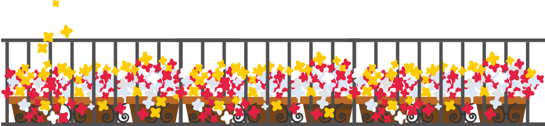

Somos uma grande família constituída por amigos, verdadeiros irmãos de alma e coração. Pessoas unidas por um ideal: fazer o bem sem olhar a quem.
O Pontinho de Luz foi fundado em julho de 2015 para promover ações de gentileza em busca de minimizar os impactos da desigualdade social. Nosso primeiro grupo de assistência aos necessitados surgiu na cidade de Niterói/RJ e alcançou maiores proporções com o passar do tempo, conforme a participação crescente dos voluntários.
Juntos, já coletamos e distribuímos mais de 100 toneladas em doações de alimentos, roupas e cobertores, atendemos centenas de famílias e oferecemos suporte a pessoas em situação de rua. Não buscamos critérios restritivos para contribuir; apenas oferecemos ajuda conforme a necessidade de cada um.
Nossas atividades de assistência dependem das doações de amigos, familiares e empresas e acontecem conforme haja recursos disponíveis para tal. Assim, contamos com a solidariedade e a possibilidade de cada participante em contribuir para o Pontinho da Luz.
Ajude-nos a ajudar e ponha seu amor em movimento através da solidariedade.
Rede de solidariedade